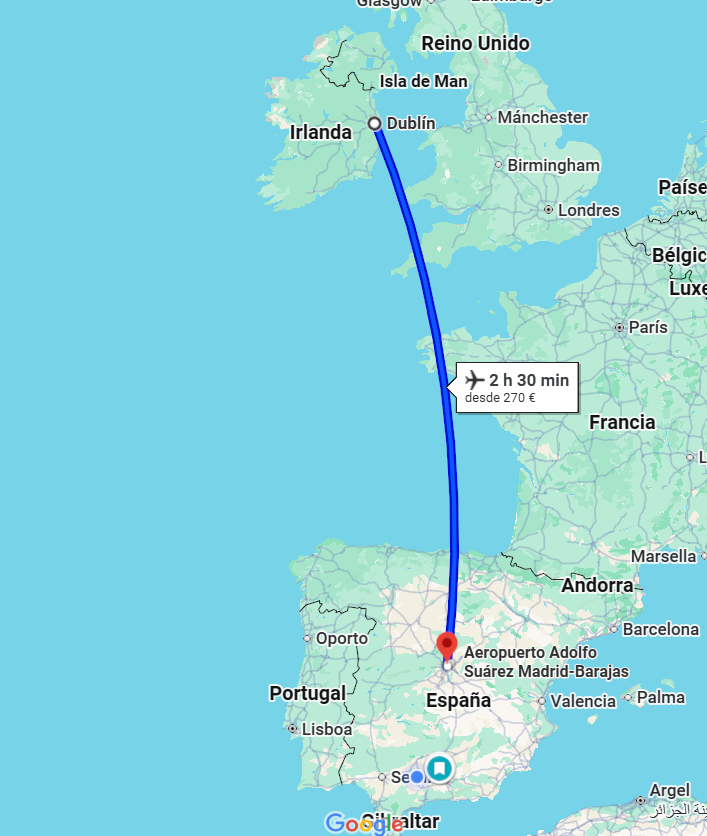
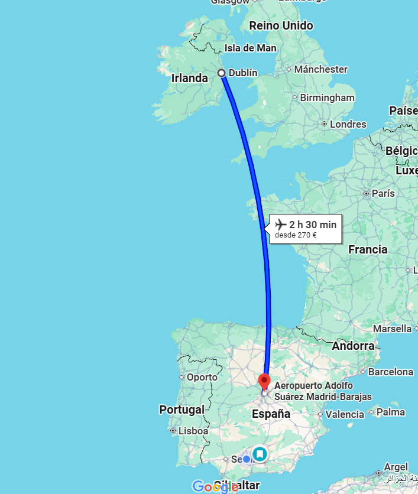

KILKENNY - DUBLIN - MADRID - ALBACETE


Esta mañana vamos a realizar la visita del Castillo de Kilkenny (entradas incluidas) : La fundación del castillo actual se remonta al año 1190, perteneciendo a la familia Butler desde el siglo XIV hasta 1920, fecha en que Martin Breyer lo compró. Las principales estancias son la biblioteca, el comedor, la habitación china y la Long Gallery.
A las 13,30 hrs., traslado al aeropuerto de Dublin (2 hrs. aprox.) Llegada a las 15,30 hrs. aprox.

A las 18,20 hrs., tomaremos nuestro Vuelo directo de Iberia con destino a Madrid. (duración del vuelo 2 hrs. y 35 min)
Llegada al aeropuerto de Madrid a las 21,55 hrs

Recogida de equipajes y traslado en nuestro bus privado hasta Albacete.
Llegada y fin del viaje y de nuestros servicios.

Obra publicada con Licencia Creative Commons Reconocimiento Compartir igual 4.0